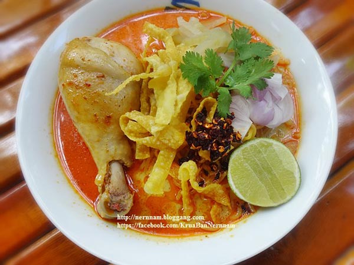
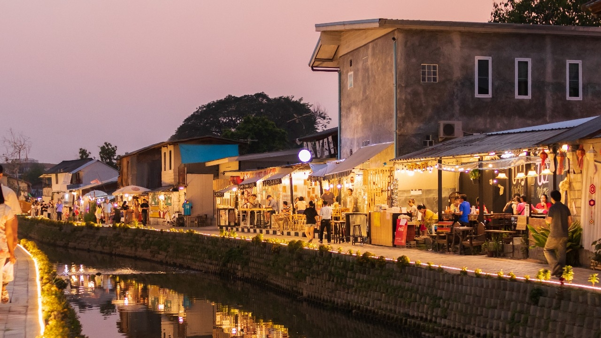

แผนเที่ยวเชียงใหม่ 1 วัน : ดอยสุเทพ - นิมมาน - คลองแม่ข่า
เว็บนี้จัดทำขึ้นเพื่อแนะนำแผนท่องเที่ยวในจังหวัดเชียงใหม่แบบ 1 วันเต็ม โดยจัดเส้นทางให้เดินทางต่อกันได้ง่ายๆ ไม่ต้องขับรถย้อนไปย้อนมา
มีครบทั้งไหว้พระทำบุญ เดินเล่นถ่ายรูป หาของกินอร่อยๆ และเดินชิลช่วงเย็น
1. ช่วงเช้า : ไหว้พระขอพรและชมวิวบนดอยสุเทพ
เริ่มต้นวันด้วยการขึ้นไปไหว้พระที่ วัดพระธาตุดอยสุเทพราชวรวิหาร เพื่อความเป็นสิริมงคล และชมวิวตัวเมืองเชียงใหม่จากมุมสูงตอนเช้า
2. ช่วงกลางวัน : กินอาหารเหนือย่านนิมมาน และเที่ยววัดในเมือง
ลงจากดอยมาหาของกินอร่อยๆ แถวนิมมานเหมินท์ เช่น ข้าวซอย ขนมจีนน้ำเงี้ยว แล้วเดินเล่นถ่ายรูป
ช่วงบ่ายค่อยเข้าไปในเขตคูเมืองเพื่อไหว้พระและดูสถาปัตยกรรมเก่าแก่ที่วัดเจดีย์หลวงวรวิหาร

3. ช่วงเย็น : ดูพระอาทิตย์ตกที่อ่างแก้ว และเดินเล่นคลองแม่ข่า
ตอนเย็นไปนั่งรับลมเย็นๆ ดูพระอาทิตย์ตกที่ อ่างแก้ว ถ่ายรูปกับวิวดอยสุเทพ
แล้วปิดท้ายวันด้วยการไปเดินเล่น หาของกินสตรีทฟู้ด และถ่ายรูปบรรยากาศสวยๆ ที่คลองแม่ข่า
.jpg)

ลำดับกิจกรรมตลอดทั้งวัน
-
07:30 - 09:30 น. ไหว้พระที่
วัดพระธาตุดอยสุเทพราชวรวิหาร
และชมวิวเมืองเชียงใหม่ตอนเช้า
- 09:45 - 10:30 น. แวะชมวัดผาลาด วัดเก่าแก่กลางป่าตรงทางลงดอยสุเทพ
- 10:45 - 12:15 น. เที่ยวชมอุโมงค์โบราณที่วัดอุโมงค์ และเดินเล่นโครงการบ้านข้างวัด
- 12:30 - 14:30 น. กินข้าวกลางวันและเดินเล่นย่านนิมมานเหมินท์
- 15:00 - 16:30 น. ไหว้พระธาตุเจดีย์หลวง และชมเสาอินทขิล ที่วัดเจดีย์หลวงวรวิหาร
- 17:00 - 18:15 น. นั่งชิลและดูพระอาทิตย์ตกที่อ่างแก้ว
- 18:45 - 21:00 น. เดินเล่นและหาของกินมื้อเย็นที่คลองแม่ข่า
สิ่งที่ควรเตรียมและข้อควรรู้ก่อนไป
- ควรแต่งกายสุภาพเพราะต้องเข้าวัดหลายที่
- ควรพกเสื้อคลุมหรือเสื้อกันหนาวไปด้วย เพราะบนดอยสุเทพตอนเช้าอากาศค่อนข้างเย็น
- ใส่รองเท้าผ้าใบหรือรองเท้าที่เดินสบายๆ เพราะต้องเดินขึ้นบันไดนาค 306 ขั้น (หรือจะนั่งรถรางขึ้นก็ได้)
- ถ้าไม่มีรถส่วนตัว สามารถขึ้นรถแดงแถวหน้า เพื่อเดินทางขึ้นดอยสุเทพได้